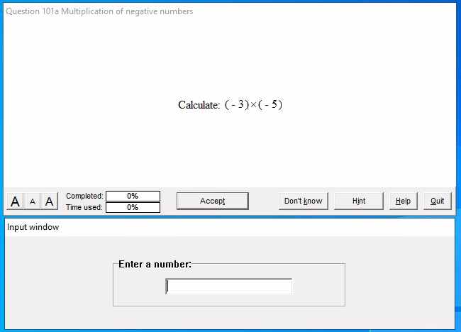
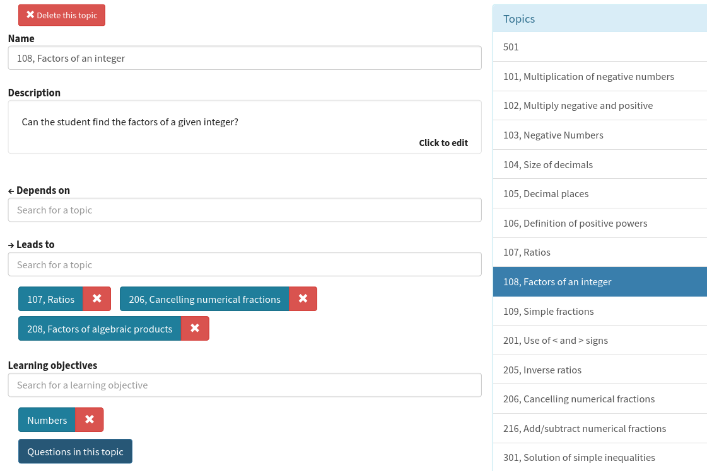

Diagnostic testing in Numbas
Christian Lawson-Perfect,
School of Mathematics, Statistics and Physics
Newcastle University Learning and Teaching Conference 2022
Goal
Implement a model of adaptive assessment in Numbas, for diagnostic tests
- Efficiently identify weak spots in students' presumed knowledge
- Don't ask questions that are too easy or too hard
DIAGNOSYS

DIAGNOSYS
DIAGNOSYS
DIAGNOSYS
DIAGNOSYS
DIAGNOSYS
DIAGNOSYS
Implementation in Numbas
- Exam author defines topics and learning objectives.
- Controlled by a diagnostic algorithm.
- Some built-in, can extend or write your own.
(See the documentation)

Useful when
You want to test:
- small
- easily-assessed
- hierarchical
pieces of knowledge
Writing an adaptive test is hard
Need to write lots of questions.
Must think hard about model of knowledge, and relations between topics.